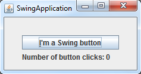
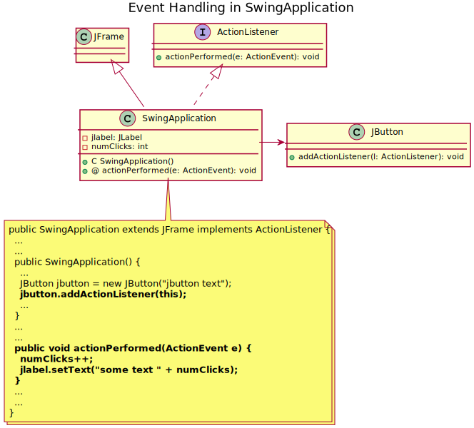
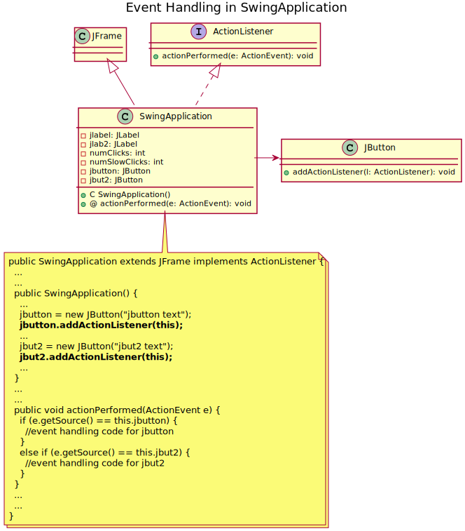

Fig 1.b: GUI dopo sette click
Fig 1.b: GUI dopo sette clickSi desidera realizzare un'applicazione grafica nella tecnologia JFC/Swing che visualizzi, in una finestra grafica, un pulsante e un'etichetta in cui viene riportato il numero di click dell'utente sul pulsante.
 Fig 1.a: GUI iniziale
Fig 1.b: GUI dopo sette click
Si richiede di implementare la GUI mediante un'unica classe Java, di nome SwingApplication, contenente il metodo main() necessario ad avviare l'applicazione grafica.
Proviamo a progettare la GUI di SwingApplication procedendo per gradi, separando la definizione del layout dalla gestione dell'interazione con l'utente. In particolare, nella Fase 1 svilupperemo una GUI che presenta il layout desiderato, ma che non è interattiva (non risponde agli input dell'utente) e nella Fase 2 provvederemo a rendere la GUI interattiva secondo quanto specificato nel testo dell'esercizio.
Definire il layout della GUI significa specificare in modo appropriato:
Container, fungono da contenitori e possono contenere a loro volta altre componenti Container che includono ulteriori gruppi di componenti e così via);Container è necessario specificare la disposizione spaziale delle componenti che contiene.Componenti Swing della GUI:
javax.swing.JFrame: finestra principale della GUI e root della gerarchia di inclusione;java.awt.Container: content pane del JFrame;javax.swing.JPanel: pannello contenente il pulsante e l'etichetta;javax.swing.JButton: pulsante della GUI;javax.swing.JLabel: etichetta della GUI.
Gerarchia inclusione componenti
Fig 2: Gerarchia di inclusione delle componenti Swing della GUI
La gerarchia d'inclusione delle componenti prevede la presenza di due componenti di tipo Container: il content pane del JFrame e il JPanel. I gestori di layout utilizzabili per ottenere una GUI analoga a quella visualizzata in Fig. 1 sono:
java.awt.BorderLayout: è il gestore di layout di default del content pane di un JFrame, nel nostro caso sarà necessario specificare l'opzione CENTER;java.awt.GridLayout: è il gestore di layout che assegneremo al JPanel; permette di arrangiare le componenti secondo uno schema a matrice di cui vengono specificate le righe e colonne (è consentito anche lasciare indefinita una delle due dimensioni della matrice); nel nostro caso considereremo una matrice 2 x 1 oppure una matrice N x 1, ove N arbitrario va specificato con zero (0 x 1 sta per N x 1 ove N è qualsiasi).Si noti che il modo più comune di procedere per lo sviluppo di una specifica GUI è quello di estendere la classe javax.swing.JFrame al fine di ottenere una finestra grafica con tutte le caratteristiche desiderate.
Per rendere una GUI interattiva è necessario collegare le componenti swing con le quali interagisce l'utente, tramite il mouse e/o la tastiera, ad oggetti ascoltatori di eventi (event listener object) che recepiscono l'input di utente e permettono di stabilire il conseguente comportamento del programma. Nel nostro caso è necessario associare un oggetto ascoltatore al JButton specificando che ad ogni click dell'utente il testo del componente JLabel deve essere aggiornato. A tale scopo la classe JButton prevede il metodo
public void addActionListener(ActionListener listner)
che prende come parametro un oggetto di tipo ActionListener, cioè un oggetto che implementa l'interfaccia java.awt.event.ActionListener. Una classe implementa l'interfaccia ActionListener se implementa il seguente metodo
public void actionPerformed(ActionEvent e)
in cui è possibile specificare il codice da eseguire a seguito dell'input di utente; tale metodo riceve in input un oggetto di tipo java.awt.event.ActionEvent che viene generato automaticamente ogni volta che viene registrato un input di utente (click sul pulsante) e che contiene tra l'altro informazioni inerenti al tipo di evento e al tipo di componente (di tipo controllo) che l'ha generato.
Molto spesso l'oggetto di tipo ActionListener è lo stesso che rappresenta il JFrame; in questo esercizio adotteremo tale approccio, che è sintetizzato nel diagramma di classe UML riportato di seguito.
 Fig 3: Strategia di gestione degli eventi in SwingApplication.
Modificare il codice della classe SwingApplication in modo da rendere il pulsante sensibile alla pressione di un tasto della tastiera oltre che al click del mouse. Inserire inoltre un frammento di codice che consenta di specificare il look-and-feel della GUI.
Il metodo
public void setMnemonic(int mnemonic)
consente di specificare un carattere, cioè un tasto della tastiera, utilizzabile dall'utente in alternativa al click del mouse (shortcut key).
Il look-and-feel della GUI viene invece specificato utilizzando appositi metodi statici della classe javax.swing.UIManager. Particolarmente utili sono i seguenti metodi:
public static void setLookAndFeel(String className) // imposta il look-and-feel desiderato specificandone il nome della classepublic static String getCrossPlatformLookAndFeelClassName() // ritorna il nome della classe che rappresenta il look-and-feel indipendente dalla piattaformapublic static String getSystemLookAndFeelClassName() // ritorna il look-and-feel nativo del sistema operativoIl look-and-feel deve essere specificato in fase iniziale, prima della costruzione della GUI.
Modificare la classe SwingApplication in modo che sia presente un altro pulsante la cui pressione deve avviare l'esecuzione del metodo slowMethod(), riportato sotto, e successivamente incrementare un'etichetta che conta il numero di esecuzioni effettuate da tale metodo.
private void slowMethod(int sec) {
try {
Thread.sleep(1000 * sec);
}
catch(InterruptedException ie) {
ie.printStackTrace();
}
}Domanda: Qual è l'effetto provocato dall'esecuzione di slowMethod()?
Una possibile soluzione è riportata di seguito. Tale soluzione adotta una strategia di gestione degli eventi molto simile alla precedente, ora però è necessario introdurre un controllo aggiuntivo per capire da quale dei due pulsanti è generato l'evento ActionEvent in actionPerformed(); il tipo di risposta all'evento dipende infatti da chi lo ha generato, cioè dalla sorgente dell'evento.
 Fig 4: Nuova strategia di gestione degli eventi, ispirata alla precedente.
Domanda: Cosa succede premendo il pulsante che innesca l'esecuzione di slowMethod() e subito dopo l'altro pulsante?
Siccome tutto il codice di SwingApplication viene eseguito in un unico thread e, nello specifico, nell'event dispatch thread (il codice eseguito è incapsulato all'interno di un oggetto Runnable passato al metodo invokeLater() di javax.swing.SwingUtilities), l'esecuzione di slowMethod() blocca la GUI per un periodo di tempo non accettabile. In generale, la gestione di un qualunque evento blocca la GUI per tutto il tempo richiesto all'esecuzione del task innescato dall'evento stesso. Se tale task è di durata limitata, l'utente non si accorge che la GUI non risponde, se invece il task ha una durata di diversi secondi allora l'utente percepisce un malfunzionamento della GUI. Ne consegue che gli eventi che innescano task lenti devono essere gestiti in background su thread appositi, uno per ogni evento, diversi ovviamente dall'event dispatch thread.
A tale scopo il framework JFC/Swing offre delle soluzioni per gestire situazioni di questo tipo, che non richiedono di utilizzare direttamente il multithreading, cosa che comunque è sempre fattibile, ma non consigliabile. Tali soluzioni si basano sull'impiego della classe astratta javax.swing.SwingWorker, la quale presenta, tra gli altri, un metodo astratto doInBackground() e un metodo concreto done().
Illustriamo di seguito un possibile modo di procedere nel caso specifico. In prima battuta, conviene introdurre un nuovo metodo privato executeSlowMethodInBackground() che concentra al suo interno la gestione in backgorund del task lento. Poi, all'interno di tale metodo, è necessario istanziare un oggetto di una sotto-classe (anonima) di javax.swing.SwingWorker. Il codice che deve essere eseguito in background, va inserito all'interno del metodo doInBackground() di tale sotto-classe, metodo che deve essere obbligatoriamente presente in quanto l'omonimo metodo in javax.swing.SwingWorker è dichiarato abstract. Mentre il codice che determina il tipo di azione da espletare (ammesso che ne esista una) non appena il task lento è terminato, va inserito all'interno del metodo done(); si sta pertanto sovrascrivendo il metodo (concreto) done() di javax.swing.SwingWorker. Si osservi che il codice del metodo done() viene eseguito nell'event dispatch thread. Infine, per avviare il task in background, è necessario assicurarsi che venga invocato il metodo execute() sull'oggetto SwingWorker appena creato, ciò serve ad avviare il processo appena descritto.
IMPORTANTE: la classe astratta SwingWorker è una classe tipizzata, vale a dire la sua implementazione è parametrica rispetto ad alcuni tipi generici, nelle API di Java viene infatti menzionata nel seguente modo SwingWorker<T,V>. Dove T è un generico tipo restituito dal metodo doInBackground() mentre V è un altro tipo generico utilizzato per trasmettere eventuali risultati intermedi, calcolati nel thread in background, a metodi che vengono eseguiti nell'event dispatch thread. Tali metodi sono finalizzati generalmente a fornire dei feedback all'utente sullo stato di avanzamento del task in background. Laddove queste necessità non sussistono, quindi non c'è un tipo non parametrico da specificare in fase di utilizzo della classe SwingWorker<T,V>, si deve utilizzare in luogo di T e V la classe Void e non la keyword void. Inoltre, il metodo doInBackground() deve ritornare null; si tratta di una mera questione di omogenietà sintattica.